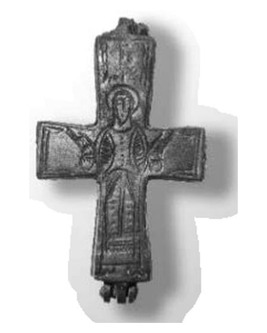
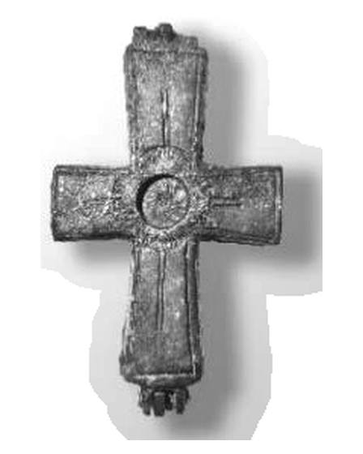

Catalog › CE-0312 · ERI2018-4
Encolpion bivalv de bronz, cat. 4, Muzeul Erimtan
sec. IX–XI (801–1100) · loc necunoscut · Muzeul de Arheologie și Artă Erimtan (Erimtan Arkeoloji ve Sanat Müzesi), Ankara, Turcia
double-sided reliquary cross (enkolpion), bronz; c. IX–XI (801–1100); find spot unknown; kept at Muzeul de Arheologie și Artă Erimtan (Erimtan Arkeoloji ve Sanat Müzesi), Ankara, Turcia.




Identificare
- Categorie
- Encolpion bivalv (relicvar)
- Material
- Bronz
- Tehnică
- Gravare (incizie); Încrustație
- Stare
- Întreagă
- Dimensiuni
- Î 58 × L 34 mm
Iconografie
- Avers
- Sf. Gheorghe
- Descriere avers
- Sf. Gheorghe, în picioare, cu brațele întinse; veșmântul e lucrat în detaliu, brațele și degetele foarte stilizate (degetele sunt linii simple), picioarele întoarse spre exterior; deasupra capului inscripția γηοργοσ. Brațul de jos e mai lung decât celelalte.
- Revers
- Ornament geometric
- Descriere revers
- În centru un locaș circular (cloisonné) pentru sticlă colorată; de la centru spre brațe linii incizate care formează o cruce.
- Inscripții
- γηοργοσ [Γεώργιος]
- Limba
- Greacă
Datare și atribuire
- Datare
- sec. IX–XI (801–1100)
- Centru
- Necunoscut
- Tipologie
- Pitarakis 2006, forma tip I
Descoperire
- Context
- Colecție (fără context)
- Coordonate
- 39.9370° N, 32.8610° E
- Precizia locului
- Loc de păstrare (loc de descoperire incert)
Păstrare și referințe
- Colecție
- Muzeul de Arheologie și Artă Erimtan (Erimtan Arkeoloji ve Sanat Müzesi), Ankara, Turcia
- Bibliografie
- O. Koçyiğit, Erimtan Arkeoloji ve Sanat Müzesi Bizans Dönemi Maden Haçları, „Hacettepe Üniversitesi Edebiyat Fakültesi Dergisi”, 35/2, decembrie 2018, p. 110–121 [Koçyiğit 2018], p. 117, cat. nr. 4, reprodusă la Res. 4 (p. 120). DOI: 10.32600/huefd.430267.
- Figura
- Res. 4
- Planșe
- Koçyiğit 2018, p. 120
- Analogii
- Kütahya (Acara Eser 2007, p. 247); Ankara, Muzeul Civilizațiilor Anatoliene (Aydın 2003, Abb. 12–14); Muzeul de Arheologie din İstanbul (Pitarakis 2006, cat. 318, p. 346–348); Silifke (Buyruk 2014b, cat. 1, doar fața din spate); toate sec. X–XII
- Observații
- Datare după Koçyiğit: Perioada Bizantină Mijlocie, sec. IX–XI. Numărul de inventar nu e dat în sursă (piesele sunt numerotate „Res. No”); piesele au intrat în colecție unele prin cumpărare, altele prin donație, locul descoperirii nu se cunoaște; autorul le socotește de origine anatoliană. Dimensiuni date în sursă (cm): înălțime 5.8, lățime 3.4. Autorul descrie piesa ca „tam ve sağlam” (întreagă și în stare bună). Locul descoperirii nu e cunoscut cu precizie; punctul de pe hartă marchează locul de păstrare (Muzeul de Arheologie și Artă Erimtan), nu locul descoperirii. Coordonate: nu sunt date în sursă.
Citare: Corpus Encolpiorum, CE-0312, Encolpion bivalv de bronz, cat. 4, Muzeul Erimtan, --root/piese/ERI2018-4/ (accesat 2026-10-20).